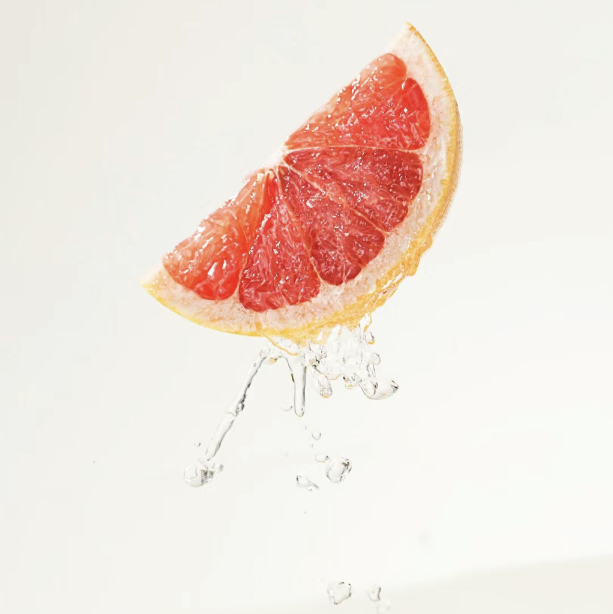

DAISY EAU SO FRESH
CHANEL
DESCRIPTION
A spirited incarnation of the original Daisy, this Marc Jacobs fragrance excites the senses with a bright elegance and whimsical charm. Like the woman who wears it, Daisy Eau So Fresh inspires us to be bold and feminine, sweet and unpredictable.
FEATURES
Top Notes: Natural Raspberry, Grapefruit, Pear
Mid Notes: Violets, Wild Rose, Apple Blossom
Base Notes: Musks, Cedarwood, Plum
